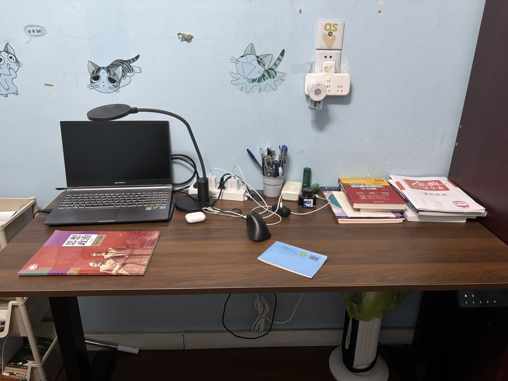

penpunk
@penpunx
以前我在学校玩手机，两天就用光一个充电宝的电量，现在两天都没用到充电宝，说明我在学校里学习很认真而且睡得也早（
以及我在学校里还跳绳回家也运动了，我感觉很开心
我感觉比上学期刚开学状态更好，也许是因为我无论如何都很自信，也许是因为普瑞巴林（（

penpunk
@penpunx
感觉开学之后的工作日从起床到睡觉都有固定的日程，然而其中的作业等不确定因素需要我作出大量的决策。我专注了好久好久(上学的时候，放学路上学日语，休息的时候打牌，晚上写作业和洗澡)，但是压力很大，而且工作完成之后专注限额就耗尽了。所以，我难以通过最常用的调整认知的手段改善情绪。 https://t.co/iBprjtj0MY